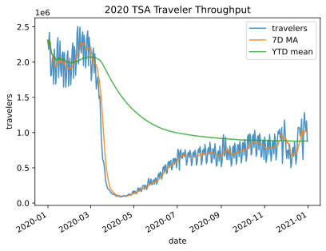

Section 2: Data Wrangling#
To prepare our data for analysis, we need to perform data wrangling. In this section, we will learn how to clean and reformat data (e.g., renaming columns and fixing data type mismatches), restructure/reshape it, and enrich it (e.g., discretizing columns, calculating aggregations, and combining data sources).
Data cleaning#
In this section, we will take a look at creating, renaming, and dropping columns; type conversion; and sorting – all of which make our analysis easier. We will be working with the 2019 Yellow Taxi Trip Data provided by NYC Open Data.
import pandas as pd
pd.read_csv?
tree2005 = pd.read_csv('data/2005_Street_Tree_Census.csv')
C:\Users\Wenge\AppData\Local\Temp\ipykernel_32712\4084950916.py:1: DtypeWarning: Columns (37) have mixed types. Specify dtype option on import or set low_memory=False.
tree2005 = pd.read_csv('data/2005_Street_Tree_Census.csv')
tree2005
| OBJECTID | cen_year | tree_dbh | address | tree_loc | pit_type | soil_lvl | status | spc_latin | spc_common | ... | state | latitude | longitude | x_sp | y_sp | objectid_1 | census tract | bin | bbl | Location 1 | |
|---|---|---|---|---|---|---|---|---|---|---|---|---|---|---|---|---|---|---|---|---|---|
| 0 | 592373 | 2005 | 6 | 1139 57 STREET | Front | Sidewalk Pit | Level | Good | PYRUS CALLERYANA | PEAR, CALLERY | ... | New York | 40.632653 | -74.000245 | 984182 | 169769 | 0 | 216.0 | 3140038.0 | 3.056890e+09 | (40.63265321, -74.00024499) |
| 1 | 592374 | 2005 | 6 | 2220 BERGEN AVENUE | Across | Sidewalk Pit | Level | Good | PLATANUS ACERIFOLIA | LONDON PLANETREE | ... | New York | 40.620084 | -73.901453 | 1011608 | 165205 | 1 | 706.0 | 3238037.0 | 3.084440e+09 | (40.62008375, -73.9014528) |
| 2 | 592375 | 2005 | 13 | 2360 BERGEN AVENUE | Front | Continuous Pit | Level | Good | ACER PLATANOIDES CRIMSON KING | MAPLE, NORWAY-CR KNG | ... | New York | 40.617996 | -73.899111 | 1012259 | 164445 | 2 | 706.0 | 3238299.0 | 3.084530e+09 | (40.61799567, -73.89911096) |
| 3 | 592376 | 2005 | 13 | 2254 BERGEN AVENUE | Across | Sidewalk Pit | Level | Good | PLATANUS ACERIFOLIA | LONDON PLANETREE | ... | New York | 40.619694 | -73.901003 | 1011733 | 165063 | 3 | 706.0 | 3238045.0 | 3.084440e+09 | (40.6196936, -73.90100311) |
| 4 | 592377 | 2005 | 15 | 2332 BERGEN AVENUE | Across | Sidewalk Pit | Level | Good | PLATANUS ACERIFOLIA | LONDON PLANETREE | ... | New York | 40.618323 | -73.899467 | 1012160 | 164564 | 4 | 706.0 | 3238294.0 | 3.084530e+09 | (40.61832261, -73.89946707) |
| ... | ... | ... | ... | ... | ... | ... | ... | ... | ... | ... | ... | ... | ... | ... | ... | ... | ... | ... | ... | ... | ... |
| 592367 | 1184740 | 2005 | 9 | 62 LEWISTON STREET | Front | Lawn | Level | Good | PLATANUS ACERIFOLIA | LONDON PLANETREE | ... | New York | 40.586260 | -74.148797 | 942921 | 152902 | 592367 | 27704.0 | 5037776.0 | 5.023710e+09 | (40.58626041, -74.14879727) |
| 592368 | 1184741 | 2005 | 7 | 68 LEWISTON STREET | Front | Lawn | Level | Good | ACER SACCHARINUM | MAPLE, SILVER | ... | New York | 40.586090 | -74.149013 | 942861 | 152840 | 592368 | 27704.0 | 5037778.0 | 5.023710e+09 | (40.58608995, -74.14901291) |
| 592369 | 1184742 | 2005 | 5 | 69 TRAVIS AVENUE | Side | Lawn | Level | Good | ACER PLATANOIDES CRIMSON KING | MAPLE, NORWAY-CR KNG | ... | New York | 40.585802 | -74.149156 | 942821 | 152735 | 592369 | 27704.0 | 5037737.0 | 5.023710e+09 | (40.58580156, -74.14915628) |
| 592370 | 1184743 | 2005 | 9 | 69 TRAVIS AVENUE | Side | Lawn | Level | Good | ACER PLATANOIDES CRIMSON KING | MAPLE, NORWAY-CR KNG | ... | New York | 40.585802 | -74.149156 | 942821 | 152735 | 592370 | 27704.0 | 5037737.0 | 5.023710e+09 | (40.58580156, -74.14915628) |
| 592371 | 1184744 | 2005 | 2 | 69 TRAVIS AVENUE | Side | Lawn | Level | Good | ACER PLATANOIDES CRIMSON KING | MAPLE, NORWAY-CR KNG | ... | New York | 40.585802 | -74.149156 | 942821 | 152735 | 592371 | 27704.0 | 5037737.0 | 5.023710e+09 | (40.58580156, -74.14915628) |
592372 rows × 54 columns
Dropping columns#
Let’s start by dropping some columns which we won’t be using.
tree2005.columns
Index(['OBJECTID', 'cen_year', 'tree_dbh', 'address', 'tree_loc', 'pit_type',
'soil_lvl', 'status', 'spc_latin', 'spc_common', 'vert_other',
'vert_pgrd', 'vert_tgrd', 'vert_wall', 'horz_blck', 'horz_grate',
'horz_plant', 'horz_other', 'sidw_crack', 'sidw_raise', 'wire_htap',
'wire_prime', 'wire_2nd', 'wire_other', 'inf_canopy', 'inf_guard',
'inf_wires', 'inf_paving', 'inf_outlet', 'inf_shoes', 'inf_lights',
'inf_other', 'trunk_dmg', 'zipcode', 'zip_city', 'cb_num', 'borocode',
'boroname', 'cncldist', 'st_assem', 'st_senate', 'nta', 'nta_name',
'boro_ct', 'state', 'latitude', 'longitude', 'x_sp', 'y_sp',
'objectid_1', 'census tract', 'bin', 'bbl', 'Location 1'],
dtype='object')
columns2drop = ['cen_year', 'address', 'tree_loc', 'pit_type',
'soil_lvl', 'status', 'spc_latin', 'vert_other',
'vert_pgrd', 'vert_tgrd', 'vert_wall', 'horz_blck', 'horz_grate',
'horz_plant', 'horz_other', 'sidw_crack', 'sidw_raise', 'wire_htap',
'wire_prime', 'wire_2nd', 'wire_other', 'inf_canopy', 'inf_guard',
'inf_wires', 'inf_paving', 'inf_outlet', 'inf_shoes', 'inf_lights',
'inf_other', 'trunk_dmg', 'zipcode', 'zip_city', 'cb_num',
'cncldist', 'st_assem', 'st_senate', 'nta', 'nta_name',
'boro_ct', 'state', 'latitude', 'longitude', 'x_sp', 'y_sp',
'objectid_1', 'census tract', 'bin', 'bbl', 'Location 1']
tree2005 = tree2005.drop(columns=columns2drop)
tree2005.columns
Index(['OBJECTID', 'tree_dbh', 'spc_common', 'borocode', 'boroname'], dtype='object')
tree2005
| OBJECTID | tree_dbh | spc_common | borocode | boroname | |
|---|---|---|---|---|---|
| 0 | 592373 | 6 | PEAR, CALLERY | 3 | Brooklyn |
| 1 | 592374 | 6 | LONDON PLANETREE | 3 | Brooklyn |
| 2 | 592375 | 13 | MAPLE, NORWAY-CR KNG | 3 | Brooklyn |
| 3 | 592376 | 13 | LONDON PLANETREE | 3 | Brooklyn |
| 4 | 592377 | 15 | LONDON PLANETREE | 3 | Brooklyn |
| ... | ... | ... | ... | ... | ... |
| 592367 | 1184740 | 9 | LONDON PLANETREE | 5 | 5 |
| 592368 | 1184741 | 7 | MAPLE, SILVER | 5 | 5 |
| 592369 | 1184742 | 5 | MAPLE, NORWAY-CR KNG | 5 | 5 |
| 592370 | 1184743 | 9 | MAPLE, NORWAY-CR KNG | 5 | 5 |
| 592371 | 1184744 | 2 | MAPLE, NORWAY-CR KNG | 5 | 5 |
592372 rows × 5 columns
Tips:#
Another way to do this is to select the columns we want to keep:
tree2015.loc[:,~columns2drop]If you know the column names that you want, you can just read the data for specific columns
tree2005 = pd.read_csv('data/2005_Street_Tree_Census.csv', usecols=['OBJECTID', 'tree_dbh', 'spc_common', 'borocode', 'boroname'])
tree2005
C:\Users\Wenge\AppData\Local\Temp\ipykernel_32712\3626372425.py:1: DtypeWarning: Columns (37) have mixed types. Specify dtype option on import or set low_memory=False.
tree2005 = pd.read_csv('data/2005_Street_Tree_Census.csv', usecols=['OBJECTID', 'tree_dbh', 'spc_common', 'borocode', 'boroname'])
| OBJECTID | tree_dbh | spc_common | borocode | boroname | |
|---|---|---|---|---|---|
| 0 | 592373 | 6 | PEAR, CALLERY | 3 | Brooklyn |
| 1 | 592374 | 6 | LONDON PLANETREE | 3 | Brooklyn |
| 2 | 592375 | 13 | MAPLE, NORWAY-CR KNG | 3 | Brooklyn |
| 3 | 592376 | 13 | LONDON PLANETREE | 3 | Brooklyn |
| 4 | 592377 | 15 | LONDON PLANETREE | 3 | Brooklyn |
| ... | ... | ... | ... | ... | ... |
| 592367 | 1184740 | 9 | LONDON PLANETREE | 5 | 5 |
| 592368 | 1184741 | 7 | MAPLE, SILVER | 5 | 5 |
| 592369 | 1184742 | 5 | MAPLE, NORWAY-CR KNG | 5 | 5 |
| 592370 | 1184743 | 9 | MAPLE, NORWAY-CR KNG | 5 | 5 |
| 592371 | 1184744 | 2 | MAPLE, NORWAY-CR KNG | 5 | 5 |
592372 rows × 5 columns
Renaming columns#
Next, let’s rename boroname to borough to be consistent with the 2015 data. You could work the other way around, rename 2015 ‘borough into 'boroname:
tree2005 = tree2005.rename(columns={'boroname':'borough'})
tree2005.columns
Index(['OBJECTID', 'tree_dbh', 'spc_common', 'borocode', 'borough'], dtype='object')
tree2005
| OBJECTID | tree_dbh | spc_common | borocode | borough | |
|---|---|---|---|---|---|
| 0 | 592373 | 6 | PEAR, CALLERY | 3 | Brooklyn |
| 1 | 592374 | 6 | LONDON PLANETREE | 3 | Brooklyn |
| 2 | 592375 | 13 | MAPLE, NORWAY-CR KNG | 3 | Brooklyn |
| 3 | 592376 | 13 | LONDON PLANETREE | 3 | Brooklyn |
| 4 | 592377 | 15 | LONDON PLANETREE | 3 | Brooklyn |
| ... | ... | ... | ... | ... | ... |
| 592367 | 1184740 | 9 | LONDON PLANETREE | 5 | 5 |
| 592368 | 1184741 | 7 | MAPLE, SILVER | 5 | 5 |
| 592369 | 1184742 | 5 | MAPLE, NORWAY-CR KNG | 5 | 5 |
| 592370 | 1184743 | 9 | MAPLE, NORWAY-CR KNG | 5 | 5 |
| 592371 | 1184744 | 2 | MAPLE, NORWAY-CR KNG | 5 | 5 |
592372 rows × 5 columns
tree2005.loc[tree2005.borocode == 5,'borough'] = 'Staten Island'
tree2005
| OBJECTID | tree_dbh | spc_common | borocode | borough | |
|---|---|---|---|---|---|
| 0 | 592373 | 6 | PEAR, CALLERY | 3 | Brooklyn |
| 1 | 592374 | 6 | LONDON PLANETREE | 3 | Brooklyn |
| 2 | 592375 | 13 | MAPLE, NORWAY-CR KNG | 3 | Brooklyn |
| 3 | 592376 | 13 | LONDON PLANETREE | 3 | Brooklyn |
| 4 | 592377 | 15 | LONDON PLANETREE | 3 | Brooklyn |
| ... | ... | ... | ... | ... | ... |
| 592367 | 1184740 | 9 | LONDON PLANETREE | 5 | Staten Island |
| 592368 | 1184741 | 7 | MAPLE, SILVER | 5 | Staten Island |
| 592369 | 1184742 | 5 | MAPLE, NORWAY-CR KNG | 5 | Staten Island |
| 592370 | 1184743 | 9 | MAPLE, NORWAY-CR KNG | 5 | Staten Island |
| 592371 | 1184744 | 2 | MAPLE, NORWAY-CR KNG | 5 | Staten Island |
592372 rows × 5 columns
Exercise 2.1#
Download and read 1995 NYC tree data from here
Download 2005 NYC tree data from here
Download and read 2015 NYC tree data from here.
Drop all the columns except for [‘tree_id’,’tree_dbh’, ‘spc_common’, ‘borocode’, ‘borough’] columns. Sort the result by tree_id in descending order. Each dataset may have slightly different names for these columns, you need to check then first.
Groupbying and Sorting by values#
groupby is a very useful pandas function to do many things.
We can use the sort_values() method to sort based on any number of columns:
# Find the most dominant species and tree counts
treecount2015 = tree2015.groupby('spc_common').size()
treecount2015_sorted = treecount2015.sort_values(ascending=False)
treecount2015_sorted[0:20]
---------------------------------------------------------------------------
NameError Traceback (most recent call last)
Cell In[14], line 2
1 # Find the most dominant species and tree counts
----> 2 treecount2015 = tree2015.groupby('spc_common').size()
3 treecount2015_sorted = treecount2015.sort_values(ascending=False)
4 treecount2015_sorted[0:20]
NameError: name 'tree2015' is not defined
# Select big trees
bigtree2015 = tree2015.loc[tree2015['tree_dbh'] > 40]
bigtree2015.shape
(2495, 45)
# Find the most dominant species and tree counts in big trees
bigtreecount2015 = bigtree2015.groupby('spc_common').size()
bigtreecount2015_sorted = bigtreecount2015.sort_values(ascending=False)
bigtreecount2015_sorted[0:10]
spc_common
London planetree 993
pin oak 456
silver maple 375
northern red oak 116
American elm 81
littleleaf linden 31
willow oak 29
mulberry 25
sweetgum 22
Norway maple 20
dtype: int64
Exercise 2.2#
Find out top 10 dominant tree species for 2015, 2005 and 1995 NYC tree datasets#
Exercise 2.3#
Find the most dominant species and tree counts for tree dbh > 40 inches for 2015, 2005 and 1995 NYC tree datasets#
Working with the index#
So far, we haven’t really worked with the index because it’s just been a row number; however, we can change the values we have in the index to access additional features of the pandas library.
Setting and sorting the index#
Currently, we have a RangeIndex, but we can switch to a DatetimeIndex by specifying a datetime column when calling set_index():
taxis = taxis.set_index('pickup')
taxis.head(3)
| dropoff | passenger_count | trip_distance | payment_type | fare_amount | extra | mta_tax | tip_amount | tolls_amount | improvement_surcharge | total_amount | congestion_surcharge | elapsed_time | cost_before_tip | tip_pct | fees | avg_speed | |
|---|---|---|---|---|---|---|---|---|---|---|---|---|---|---|---|---|---|
| pickup | |||||||||||||||||
| 2019-10-23 16:39:42 | 2019-10-23 17:14:10 | 1 | 7.93 | 1 | 29.5 | 1.0 | 0.5 | 7.98 | 6.12 | 0.3 | 47.9 | 2.5 | 0 days 00:34:28 | 39.92 | 0.199900 | 10.42 | 13.804642 |
| 2019-10-23 16:32:08 | 2019-10-23 16:45:26 | 1 | 2.00 | 1 | 10.5 | 1.0 | 0.5 | 0.00 | 0.00 | 0.3 | 12.3 | 0.0 | 0 days 00:13:18 | 12.30 | 0.000000 | 1.80 | 9.022556 |
| 2019-10-23 16:08:44 | 2019-10-23 16:21:11 | 1 | 1.36 | 1 | 9.5 | 1.0 | 0.5 | 2.00 | 0.00 | 0.3 | 15.8 | 2.5 | 0 days 00:12:27 | 13.80 | 0.144928 | 4.30 | 6.554217 |
Since we have a sample of the full dataset, let’s sort the index to order by pickup time:
taxis = taxis.sort_index()
Tip: taxis.sort_index(axis=1) will sort the columns by name. The axis parameter is present throughout the pandas library: axis=0 targets rows and axis=1 targets columns.
We can now select ranges from our data based on the datetime the same way we did with row numbers:
taxis['2019-10-23 07:45':'2019-10-23 08']
| dropoff | passenger_count | trip_distance | payment_type | fare_amount | extra | mta_tax | tip_amount | tolls_amount | improvement_surcharge | total_amount | congestion_surcharge | elapsed_time | cost_before_tip | tip_pct | fees | avg_speed | |
|---|---|---|---|---|---|---|---|---|---|---|---|---|---|---|---|---|---|
| pickup | |||||||||||||||||
| 2019-10-23 07:48:58 | 2019-10-23 07:52:09 | 1 | 0.67 | 2 | 4.5 | 1.0 | 0.5 | 0.0 | 0.0 | 0.3 | 8.8 | 2.5 | 0 days 00:03:11 | 8.8 | 0.000000 | 4.3 | 12.628272 |
| 2019-10-23 08:02:09 | 2019-10-24 07:42:32 | 1 | 8.38 | 1 | 32.0 | 1.0 | 0.5 | 5.5 | 0.0 | 0.3 | 41.8 | 2.5 | 0 days 23:40:23 | 36.3 | 0.151515 | 4.3 | 0.353989 |
| 2019-10-23 08:18:47 | 2019-10-23 08:36:05 | 1 | 2.39 | 2 | 12.5 | 1.0 | 0.5 | 0.0 | 0.0 | 0.3 | 16.8 | 2.5 | 0 days 00:17:18 | 16.8 | 0.000000 | 4.3 | 8.289017 |
When not specifying a range, we use loc[]:
taxis.loc['2019-10-23 08']
| dropoff | passenger_count | trip_distance | payment_type | fare_amount | extra | mta_tax | tip_amount | tolls_amount | improvement_surcharge | total_amount | congestion_surcharge | elapsed_time | cost_before_tip | tip_pct | fees | avg_speed | |
|---|---|---|---|---|---|---|---|---|---|---|---|---|---|---|---|---|---|
| pickup | |||||||||||||||||
| 2019-10-23 08:02:09 | 2019-10-24 07:42:32 | 1 | 8.38 | 1 | 32.0 | 1.0 | 0.5 | 5.5 | 0.0 | 0.3 | 41.8 | 2.5 | 0 days 23:40:23 | 36.3 | 0.151515 | 4.3 | 0.353989 |
| 2019-10-23 08:18:47 | 2019-10-23 08:36:05 | 1 | 2.39 | 2 | 12.5 | 1.0 | 0.5 | 0.0 | 0.0 | 0.3 | 16.8 | 2.5 | 0 days 00:17:18 | 16.8 | 0.000000 | 4.3 | 8.289017 |
Resetting the index#
We will be working with time series later this section, but sometimes we want to reset our index to row numbers and restore the columns. We can make pickup a column again with the reset_index() method:
taxis = taxis.reset_index()
taxis.head()
| pickup | dropoff | passenger_count | trip_distance | payment_type | fare_amount | extra | mta_tax | tip_amount | tolls_amount | improvement_surcharge | total_amount | congestion_surcharge | elapsed_time | cost_before_tip | tip_pct | fees | avg_speed | |
|---|---|---|---|---|---|---|---|---|---|---|---|---|---|---|---|---|---|---|
| 0 | 2019-10-23 07:05:34 | 2019-10-23 08:03:16 | 3 | 14.68 | 1 | 50.0 | 1.0 | 0.5 | 4.0 | 0.0 | 0.3 | 55.8 | 0.0 | 0 days 00:57:42 | 51.8 | 0.077220 | 1.8 | 15.265165 |
| 1 | 2019-10-23 07:48:58 | 2019-10-23 07:52:09 | 1 | 0.67 | 2 | 4.5 | 1.0 | 0.5 | 0.0 | 0.0 | 0.3 | 8.8 | 2.5 | 0 days 00:03:11 | 8.8 | 0.000000 | 4.3 | 12.628272 |
| 2 | 2019-10-23 08:02:09 | 2019-10-24 07:42:32 | 1 | 8.38 | 1 | 32.0 | 1.0 | 0.5 | 5.5 | 0.0 | 0.3 | 41.8 | 2.5 | 0 days 23:40:23 | 36.3 | 0.151515 | 4.3 | 0.353989 |
| 3 | 2019-10-23 08:18:47 | 2019-10-23 08:36:05 | 1 | 2.39 | 2 | 12.5 | 1.0 | 0.5 | 0.0 | 0.0 | 0.3 | 16.8 | 2.5 | 0 days 00:17:18 | 16.8 | 0.000000 | 4.3 | 8.289017 |
| 4 | 2019-10-23 09:27:16 | 2019-10-23 09:33:13 | 2 | 1.11 | 2 | 6.0 | 1.0 | 0.5 | 0.0 | 0.0 | 0.3 | 7.8 | 0.0 | 0 days 00:05:57 | 7.8 | 0.000000 | 1.8 | 11.193277 |
Exercise 2.2#
Using the meteorite data from the Meteorite_Landings.csv file, update the year column to only contain the year, convert it to a numeric data type, and create a new column indicating whether the meteorite was observed falling before 1970. Set the index to the id column and extract all the rows with IDs between 10,036 and 10,040 (inclusive) with loc[].#
Hint 1: Use year.str.slice() to grab a substring.#
Hint 2: Make sure to sort the index before using loc[] to select the range.#
Bonus: There’s a data entry error in the year column. Can you find it? (Don’t spend too much time on this.)#
# Complete this exercise in the workbook.ipynb file
# Click on `Exercise 2.2` above to open the workbook.ipynb file
# WARNING: if you complete the exercise here, your cell numbers
# for the rest of the training might not match the slides
Reshaping data#
The taxi dataset we have be working with is in a format conducive to an analysis. This isn’t always the case. Let’s now take a look at the TSA traveler throughput data, which compares 2021 throughput to the same day in 2020 and 2019:
tsa = pd.read_csv('../data/tsa_passenger_throughput.csv', parse_dates=['Date'])
tsa.head()
| Date | 2021 Traveler Throughput | 2020 Traveler Throughput | 2019 Traveler Throughput | |
|---|---|---|---|---|
| 0 | 2021-05-14 | 1716561.0 | 250467 | 2664549 |
| 1 | 2021-05-13 | 1743515.0 | 234928 | 2611324 |
| 2 | 2021-05-12 | 1424664.0 | 176667 | 2343675 |
| 3 | 2021-05-11 | 1315493.0 | 163205 | 2191387 |
| 4 | 2021-05-10 | 1657722.0 | 215645 | 2512315 |
Source: TSA.gov (collected on May 16, 2021)
First, we will lowercase the column names and take the first word (e.g., 2021 for 2021 Traveler Throughput) to make this easier to work with:
tsa = tsa.rename(columns=lambda x: x.lower().split()[0])
tsa.head()
| date | 2021 | 2020 | 2019 | |
|---|---|---|---|---|
| 0 | 2021-05-14 | 1716561.0 | 250467 | 2664549 |
| 1 | 2021-05-13 | 1743515.0 | 234928 | 2611324 |
| 2 | 2021-05-12 | 1424664.0 | 176667 | 2343675 |
| 3 | 2021-05-11 | 1315493.0 | 163205 | 2191387 |
| 4 | 2021-05-10 | 1657722.0 | 215645 | 2512315 |
Now, we can work on reshaping it into two columns: the date and the traveler throughput from 2019 through 2021.
Starting with the long-format data below, we want to melt it into wide-format data so that we can look at the evolution of the throughput over time:
from utils import highlight_long_format
colors = {'2021': 'pink', '2020': 'skyblue', '2019': 'lightgreen'}
highlight_long_format(tsa.head(2), colors)
| date | 2021 | 2020 | 2019 | |
|---|---|---|---|---|
| 0 | 2021-05-14 00:00:00 | 1716561.000000 | 250467 | 2664549 |
| 1 | 2021-05-13 00:00:00 | 1743515.000000 | 234928 | 2611324 |
Note that the two rows above contain the same data as the six rows below:
from utils import highlight_wide_format
highlight_wide_format(tsa.head(2), colors)
| date | year | travelers | |
|---|---|---|---|
| 0 | 2021-05-14 00:00:00 | 2021 | 1716561.000000 |
| 1 | 2021-05-13 00:00:00 | 2021 | 1743515.000000 |
| 2 | 2020-05-14 00:00:00 | 2020 | 250467.000000 |
| 3 | 2020-05-13 00:00:00 | 2020 | 234928.000000 |
| 4 | 2019-05-14 00:00:00 | 2019 | 2664549.000000 |
| 5 | 2019-05-13 00:00:00 | 2019 | 2611324.000000 |
Let’s work on making this transformation.
Melting#
Melting helps convert our data into long format. Now, we have all the traveler throughput numbers in a single column:
tsa_melted = tsa.melt(
id_vars='date', # column that uniquely identifies a row (can be multiple)
var_name='year', # name for the new column created by melting
value_name='travelers' # name for new column containing values from melted columns
)
tsa_melted.sample(5, random_state=1) # show some random entries
| date | year | travelers | |
|---|---|---|---|
| 974 | 2020-09-12 | 2019 | 1879822.0 |
| 435 | 2021-03-05 | 2020 | 2198517.0 |
| 1029 | 2020-07-19 | 2019 | 2727355.0 |
| 680 | 2020-07-03 | 2020 | 718988.0 |
| 867 | 2020-12-28 | 2019 | 2500396.0 |
To convert this into a time series of traveler throughput, we need to replace the year in the date column with the one in the year column. Otherwise, we are marking prior years’ numbers with the wrong year.
tsa_melted = tsa_melted.assign(
date=lambda x: pd.to_datetime(x.year + x.date.dt.strftime('-%m-%d'))
)
tsa_melted.sample(5, random_state=1)
| date | year | travelers | |
|---|---|---|---|
| 974 | 2019-09-12 | 2019 | 1879822.0 |
| 435 | 2020-03-05 | 2020 | 2198517.0 |
| 1029 | 2019-07-19 | 2019 | 2727355.0 |
| 680 | 2020-07-03 | 2020 | 718988.0 |
| 867 | 2019-12-28 | 2019 | 2500396.0 |
This leaves us with some null values (the dates that aren’t present in the dataset):
tsa_melted.sort_values('date').tail(3)
| date | year | travelers | |
|---|---|---|---|
| 136 | 2021-12-29 | 2021 | NaN |
| 135 | 2021-12-30 | 2021 | NaN |
| 134 | 2021-12-31 | 2021 | NaN |
These can be dropped with the dropna() method:
tsa_melted = tsa_melted.dropna()
tsa_melted.sort_values('date').tail(3)
| date | year | travelers | |
|---|---|---|---|
| 2 | 2021-05-12 | 2021 | 1424664.0 |
| 1 | 2021-05-13 | 2021 | 1743515.0 |
| 0 | 2021-05-14 | 2021 | 1716561.0 |
Pivoting#
Using the melted data, we can pivot the data to compare TSA traveler throughput on specific days across years:
tsa_pivoted = tsa_melted\
.query('date.dt.month == 3 and date.dt.day <= 10')\
.assign(day_in_march=lambda x: x.date.dt.day)\
.pivot(index='year', columns='day_in_march', values='travelers')
tsa_pivoted
| day_in_march | 1 | 2 | 3 | 4 | 5 | 6 | 7 | 8 | 9 | 10 |
|---|---|---|---|---|---|---|---|---|---|---|
| year | ||||||||||
| 2019 | 2257920.0 | 1979558.0 | 2143619.0 | 2402692.0 | 2543689.0 | 2156262.0 | 2485430.0 | 2378673.0 | 2122898.0 | 2187298.0 |
| 2020 | 2089641.0 | 1736393.0 | 1877401.0 | 2130015.0 | 2198517.0 | 1844811.0 | 2119867.0 | 1909363.0 | 1617220.0 | 1702686.0 |
| 2021 | 1049692.0 | 744812.0 | 826924.0 | 1107534.0 | 1168734.0 | 992406.0 | 1278557.0 | 1119303.0 | 825745.0 | 974221.0 |
Important: We aren’t covering the unstack() and stack() methods, which are additional ways to pivot and melt, respectively. These come in handy when we have a multi-level index (e.g., if we ran set_index() with more than one column). More information can be found here.
Transposing#
The T attribute provides a quick way to flip rows and columns.
tsa_pivoted.T
| year | 2019 | 2020 | 2021 |
|---|---|---|---|
| day_in_march | |||
| 1 | 2257920.0 | 2089641.0 | 1049692.0 |
| 2 | 1979558.0 | 1736393.0 | 744812.0 |
| 3 | 2143619.0 | 1877401.0 | 826924.0 |
| 4 | 2402692.0 | 2130015.0 | 1107534.0 |
| 5 | 2543689.0 | 2198517.0 | 1168734.0 |
| 6 | 2156262.0 | 1844811.0 | 992406.0 |
| 7 | 2485430.0 | 2119867.0 | 1278557.0 |
| 8 | 2378673.0 | 1909363.0 | 1119303.0 |
| 9 | 2122898.0 | 1617220.0 | 825745.0 |
| 10 | 2187298.0 | 1702686.0 | 974221.0 |
Merging#
We typically observe changes in air travel around the holidays, so adding information about the dates in the TSA dataset provides more context. The holidays.csv file contains a few major holidays in the United States:
holidays = pd.read_csv('../data/holidays.csv', parse_dates=True, index_col='date')
holidays.loc['2019']
| holiday | |
|---|---|
| date | |
| 2019-01-01 | New Year's Day |
| 2019-05-27 | Memorial Day |
| 2019-07-04 | July 4th |
| 2019-09-02 | Labor Day |
| 2019-11-28 | Thanksgiving |
| 2019-12-24 | Christmas Eve |
| 2019-12-25 | Christmas Day |
| 2019-12-31 | New Year's Eve |
Merging the holidays with the TSA traveler throughput data will provide more context for our analysis:
tsa_melted_holidays = tsa_melted\
.merge(holidays, left_on='date', right_index=True, how='left')\
.sort_values('date')
tsa_melted_holidays.head()
| date | year | travelers | holiday | |
|---|---|---|---|---|
| 863 | 2019-01-01 | 2019 | 2126398.0 | New Year's Day |
| 862 | 2019-01-02 | 2019 | 2345103.0 | NaN |
| 861 | 2019-01-03 | 2019 | 2202111.0 | NaN |
| 860 | 2019-01-04 | 2019 | 2150571.0 | NaN |
| 859 | 2019-01-05 | 2019 | 1975947.0 | NaN |
Tip: There are many parameters for this method, so be sure to check out the documentation. To append rows, take a look at the pd.concat() function.
We can take this a step further by marking a few days before and after each holiday as part of the holiday. This would make it easier to compare holiday travel across years and look for any uptick in travel around the holidays:
tsa_melted_holiday_travel = tsa_melted_holidays.assign(
holiday=lambda x:
x.holiday\
.ffill(limit=1)\
.bfill(limit=2)
)
Tip: Check out the fillna() method documentation for additional functionality for replacing NA/NaN values.
Notice that we now have values for the day after each holiday and the two days prior. Thanksgiving in 2019 was on November 28th, so the 26th, 27th, and 29th were filled. Since we are only replacing null values, we don’t override Christmas Day with the forward fill of Christmas Eve:
tsa_melted_holiday_travel.query(
'year == "2019" and '
'(holiday == "Thanksgiving" or holiday.str.contains("Christmas"))'
)
| date | year | travelers | holiday | |
|---|---|---|---|---|
| 899 | 2019-11-26 | 2019 | 1591158.0 | Thanksgiving |
| 898 | 2019-11-27 | 2019 | 1968137.0 | Thanksgiving |
| 897 | 2019-11-28 | 2019 | 2648268.0 | Thanksgiving |
| 896 | 2019-11-29 | 2019 | 2882915.0 | Thanksgiving |
| 873 | 2019-12-22 | 2019 | 1981433.0 | Christmas Eve |
| 872 | 2019-12-23 | 2019 | 1937235.0 | Christmas Eve |
| 871 | 2019-12-24 | 2019 | 2552194.0 | Christmas Eve |
| 870 | 2019-12-25 | 2019 | 2582580.0 | Christmas Day |
| 869 | 2019-12-26 | 2019 | 2470786.0 | Christmas Day |
Aggregations and grouping#
After reshaping and cleaning our data, we can perform aggregations to summarize it in a variety of ways. In this section, we will explore using pivot tables, crosstabs, and group by operations to aggregate the data.
Pivot tables#
We can build a pivot table to compare holiday travel across the years in our dataset:
tsa_melted_holiday_travel.pivot_table(
index='year', columns='holiday', sort=False,
values='travelers', aggfunc='sum'
)
| holiday | New Year's Day | Memorial Day | July 4th | Labor Day | Thanksgiving | Christmas Eve | Christmas Day | New Year's Eve |
|---|---|---|---|---|---|---|---|---|
| year | ||||||||
| 2019 | 4471501.0 | 9720691.0 | 9414228.0 | 8314811.0 | 9090478.0 | 6470862.0 | 5053366.0 | 6535464.0 |
| 2020 | 4490388.0 | 1126253.0 | 2682541.0 | 2993653.0 | 3364358.0 | 3029810.0 | 1745242.0 | 3057449.0 |
| 2021 | 1998871.0 | NaN | NaN | NaN | NaN | NaN | NaN | NaN |
We can use the pct_change() method on this result to see which holiday travel periods saw the biggest change in travel:
tsa_melted_holiday_travel.pivot_table(
index='year', columns='holiday', sort=False,
values='travelers', aggfunc='sum'
).pct_change(fill_method=None)
| holiday | New Year's Day | Memorial Day | July 4th | Labor Day | Thanksgiving | Christmas Eve | Christmas Day | New Year's Eve |
|---|---|---|---|---|---|---|---|---|
| year | ||||||||
| 2019 | NaN | NaN | NaN | NaN | NaN | NaN | NaN | NaN |
| 2020 | 0.004224 | -0.884139 | -0.715055 | -0.639961 | -0.629903 | -0.531776 | -0.654638 | -0.532176 |
| 2021 | -0.554856 | NaN | NaN | NaN | NaN | NaN | NaN | NaN |
Let’s make one last pivot table with column and row subtotals, along with some formatting improvements. First, we set a display option for all floats:
pd.set_option('display.float_format', '{:,.0f}'.format)
Next, we group together Christmas Eve and Christmas Day, likewise for New Year’s Eve and New Year’s Day (handling for the change in year), and create the pivot table:
import numpy as np
pivot_table = tsa_melted_holiday_travel.assign(
year=lambda x: np.where(
x.holiday == "New Year's Day", pd.to_numeric(x.year) - 1, x.year
).astype(str),
holiday=lambda x: np.where(
x.holiday.str.contains('Christmas|New Year', regex=True),
x.holiday.str.replace('Day|Eve', '', regex=True).str.strip(),
x.holiday
)
).pivot_table(
index='year', columns='holiday', sort=False,
values='travelers', aggfunc='sum',
margins=True, margins_name='Total'
)
# reorder columns by order in the year
pivot_table.insert(5, "New Year's", pivot_table.pop("New Year's"))
pivot_table
| holiday | Memorial Day | July 4th | Labor Day | Thanksgiving | Christmas | New Year's | Total |
|---|---|---|---|---|---|---|---|
| year | |||||||
| 2018 | NaN | NaN | NaN | NaN | NaN | 4,471,501 | 4,471,501 |
| 2019 | 9,720,691 | 9,414,228 | 8,314,811 | 9,090,478 | 11,524,228 | 11,025,852 | 59,090,288 |
| 2020 | 1,126,253 | 2,682,541 | 2,993,653 | 3,364,358 | 4,775,052 | 5,056,320 | 19,998,177 |
| Total | 10,846,944 | 12,096,769 | 11,308,464 | 12,454,836 | 16,299,280 | 20,553,673 | 83,559,966 |
Before moving on, let’s reset the display option:
pd.reset_option('display.float_format')
Tip: Read more about options in the documentation here.
Exercise 2.3#
Using the meteorite data from the Meteorite_Landings.csv file, create a pivot table that shows both the number of meteorites and the 95th percentile of meteorite mass for those that were found versus observed falling per year from 2005 through 2009 (inclusive). Hint: Be sure to convert the year column to a number as we did in the previous exercise.#
# Complete this exercise in the workbook.ipynb file
# Click on `Exercise 2.3` above to open the workbook.ipynb file
# WARNING: if you complete the exercise here, your cell numbers
# for the rest of the training might not match the slides
Crosstabs#
The pd.crosstab() function provides an easy way to create a frequency table. Here, we count the number of low-, medium-, and high-volume travel days per year, using the pd.cut() function to create three travel volume bins of equal width:
pd.crosstab(
index=pd.cut(
tsa_melted_holiday_travel.travelers,
bins=3, labels=['low', 'medium', 'high']
),
columns=tsa_melted_holiday_travel.year,
rownames=['travel_volume']
)
| year | 2019 | 2020 | 2021 |
|---|---|---|---|
| travel_volume | |||
| low | 0 | 277 | 54 |
| medium | 42 | 44 | 80 |
| high | 323 | 44 | 0 |
Tip: The pd.cut() function can also be used to specify custom bin ranges. For equal-sized bins based on quantiles, use the pd.qcut() function instead.
Note that the pd.crosstab() function supports other aggregations provided you pass in the data to aggregate as values and specify the aggregation with aggfunc. You can also add subtotals and normalize the data. See the documentation for more information.
Group by operations#
Rather than perform aggregations, like mean() or describe(), on the full dataset at once, we can perform these calculations per group by first calling groupby():
tsa_melted_holiday_travel.groupby('year').describe(include=np.number)
| travelers | ||||||||
|---|---|---|---|---|---|---|---|---|
| count | mean | std | min | 25% | 50% | 75% | max | |
| year | ||||||||
| 2019 | 365.0 | 2.309482e+06 | 285061.490784 | 1534386.0 | 2091116.0 | 2358007.0 | 2538384.00 | 2882915.0 |
| 2020 | 365.0 | 8.818674e+05 | 639775.194297 | 87534.0 | 507129.0 | 718310.0 | 983745.00 | 2507588.0 |
| 2021 | 134.0 | 1.112632e+06 | 338040.673782 | 468933.0 | 807156.0 | 1117391.0 | 1409377.75 | 1743515.0 |
Groups can also be used to perform separate calculations per subset of the data. For example, we can find the highest-volume travel day per year using rank():
tsa_melted_holiday_travel.assign(
travel_volume_rank=lambda x: x.groupby('year').travelers.rank(ascending=False)
).sort_values(['travel_volume_rank', 'year']).head(3)
| date | year | travelers | holiday | travel_volume_rank | |
|---|---|---|---|---|---|
| 896 | 2019-11-29 | 2019 | 2882915.0 | Thanksgiving | 1.0 |
| 456 | 2020-02-12 | 2020 | 2507588.0 | NaN | 1.0 |
| 1 | 2021-05-13 | 2021 | 1743515.0 | NaN | 1.0 |
The previous two examples called a single method on the grouped data, but using the agg() method we can specify any number of them:
tsa_melted_holiday_travel.assign(
holiday_travelers=lambda x: np.where(~x.holiday.isna(), x.travelers, np.nan),
non_holiday_travelers=lambda x: np.where(x.holiday.isna(), x.travelers, np.nan),
year=lambda x: pd.to_numeric(x.year)
).select_dtypes(include='number').groupby('year').agg(['mean', 'std'])
| travelers | holiday_travelers | non_holiday_travelers | ||||
|---|---|---|---|---|---|---|
| mean | std | mean | std | mean | std | |
| year | ||||||
| 2019 | 2.309482e+06 | 285061.490784 | 2.271977e+06 | 303021.675751 | 2.312359e+06 | 283906.226598 |
| 2020 | 8.818674e+05 | 639775.194297 | 8.649882e+05 | 489938.240989 | 8.831619e+05 | 650399.772930 |
| 2021 | 1.112632e+06 | 338040.673782 | 9.994355e+05 | 273573.249680 | 1.114347e+06 | 339479.298658 |
Tip: The select_dtypes() method makes it possible to select columns by their data type. We can specify the data types to exclude and/or include.
In addition, we can specify which aggregations to perform on each column:
tsa_melted_holiday_travel.assign(
holiday_travelers=lambda x: np.where(~x.holiday.isna(), x.travelers, np.nan),
non_holiday_travelers=lambda x: np.where(x.holiday.isna(), x.travelers, np.nan)
).groupby('year').agg({
'holiday_travelers': ['mean', 'std'],
'holiday': ['nunique', 'count']
})
| holiday_travelers | holiday | |||
|---|---|---|---|---|
| mean | std | nunique | count | |
| year | ||||
| 2019 | 2.271977e+06 | 303021.675751 | 8 | 26 |
| 2020 | 8.649882e+05 | 489938.240989 | 8 | 26 |
| 2021 | 9.994355e+05 | 273573.249680 | 1 | 2 |
We are only scratching the surface; some additional functionalities to be aware of include the following:
We can group by multiple columns – this creates a hierarchical index.
Groups can be excluded from calculations with the
filter()method.We can group on content in the index using the
levelornameparameters e.g.,groupby(level=0)orgroupby(name='year').We can group by date ranges if we use a
pd.Grouper()object.
Be sure to check out the documentation for more details.
Exercise 2.4#
Using the meteorite data from the Meteorite_Landings.csv file, compare summary statistics of the mass column for the meteorites that were found versus observed falling.#
# Complete this exercise in the workbook.ipynb file
# Click on `Exercise 2.4` above to open the workbook.ipynb file
# WARNING: if you complete the exercise here, your cell numbers
# for the rest of the training might not match the slides
Time series#
When working with time series data, pandas provides us with additional functionality to not just compare the observations in our dataset, but to use their relationship in time to analyze the data. In this section, we will see a few such operations for selecting date/time ranges, calculating changes over time, performing window calculations, and resampling the data to different date/time intervals.
Selecting based on date and time#
Let’s switch back to the taxis dataset, which has timestamps of pickups and dropoffs. First, we will set the dropoff column as the index and sort the data:
taxis = taxis.set_index('dropoff').sort_index()
We saw earlier that we can slice on the datetimes:
taxis['2019-10-24 12':'2019-10-24 13']
| pickup | passenger_count | trip_distance | payment_type | fare_amount | extra | mta_tax | tip_amount | tolls_amount | improvement_surcharge | total_amount | congestion_surcharge | elapsed_time | cost_before_tip | tip_pct | fees | avg_speed | |
|---|---|---|---|---|---|---|---|---|---|---|---|---|---|---|---|---|---|
| dropoff | |||||||||||||||||
| 2019-10-24 12:30:08 | 2019-10-23 13:25:42 | 4 | 0.76 | 2 | 5.0 | 1.0 | 0.5 | 0.00 | 0.0 | 0.3 | 9.30 | 2.5 | 0 days 23:04:26 | 9.3 | 0.0 | 4.3 | 0.032938 |
| 2019-10-24 12:42:01 | 2019-10-23 13:34:03 | 2 | 1.58 | 1 | 7.5 | 1.0 | 0.5 | 2.36 | 0.0 | 0.3 | 14.16 | 2.5 | 0 days 23:07:58 | 11.8 | 0.2 | 4.3 | 0.068301 |
We can also represent this range with shorthand. Note that we must use loc[] here:
taxis.loc['2019-10-24 12']
| pickup | passenger_count | trip_distance | payment_type | fare_amount | extra | mta_tax | tip_amount | tolls_amount | improvement_surcharge | total_amount | congestion_surcharge | elapsed_time | cost_before_tip | tip_pct | fees | avg_speed | |
|---|---|---|---|---|---|---|---|---|---|---|---|---|---|---|---|---|---|
| dropoff | |||||||||||||||||
| 2019-10-24 12:30:08 | 2019-10-23 13:25:42 | 4 | 0.76 | 2 | 5.0 | 1.0 | 0.5 | 0.00 | 0.0 | 0.3 | 9.30 | 2.5 | 0 days 23:04:26 | 9.3 | 0.0 | 4.3 | 0.032938 |
| 2019-10-24 12:42:01 | 2019-10-23 13:34:03 | 2 | 1.58 | 1 | 7.5 | 1.0 | 0.5 | 2.36 | 0.0 | 0.3 | 14.16 | 2.5 | 0 days 23:07:58 | 11.8 | 0.2 | 4.3 | 0.068301 |
However, if we want to look at this time range across days, we need another strategy.
We can pull out the dropoffs that happened between a certain time range on any day with the between_time() method:
taxis.between_time('12:00', '13:00')
| pickup | passenger_count | trip_distance | payment_type | fare_amount | extra | mta_tax | tip_amount | tolls_amount | improvement_surcharge | total_amount | congestion_surcharge | elapsed_time | cost_before_tip | tip_pct | fees | avg_speed | |
|---|---|---|---|---|---|---|---|---|---|---|---|---|---|---|---|---|---|
| dropoff | |||||||||||||||||
| 2019-10-23 12:53:49 | 2019-10-23 12:35:27 | 5 | 2.49 | 1 | 13.5 | 1.0 | 0.5 | 2.20 | 0.0 | 0.3 | 20.00 | 2.5 | 0 days 00:18:22 | 17.8 | 0.123596 | 4.3 | 8.134301 |
| 2019-10-24 12:30:08 | 2019-10-23 13:25:42 | 4 | 0.76 | 2 | 5.0 | 1.0 | 0.5 | 0.00 | 0.0 | 0.3 | 9.30 | 2.5 | 0 days 23:04:26 | 9.3 | 0.000000 | 4.3 | 0.032938 |
| 2019-10-24 12:42:01 | 2019-10-23 13:34:03 | 2 | 1.58 | 1 | 7.5 | 1.0 | 0.5 | 2.36 | 0.0 | 0.3 | 14.16 | 2.5 | 0 days 23:07:58 | 11.8 | 0.200000 | 4.3 | 0.068301 |
Tip: The at_time() method can be used to extract all entries at a given time (e.g., 12:35:27).
For the rest of this section, we will be working with the TSA traveler throughput data. Let’s start by setting the index to the date column:
tsa_melted_holiday_travel = tsa_melted_holiday_travel.set_index('date')
Calculating change over time#
tsa_melted_holiday_travel.loc['2020'].assign(
one_day_change=lambda x: x.travelers.diff(),
seven_day_change=lambda x: x.travelers.diff(7),
).head(10)
| year | travelers | holiday | one_day_change | seven_day_change | |
|---|---|---|---|---|---|
| date | |||||
| 2020-01-01 | 2020 | 2311732.0 | New Year's Day | NaN | NaN |
| 2020-01-02 | 2020 | 2178656.0 | New Year's Day | -133076.0 | NaN |
| 2020-01-03 | 2020 | 2422272.0 | NaN | 243616.0 | NaN |
| 2020-01-04 | 2020 | 2210542.0 | NaN | -211730.0 | NaN |
| 2020-01-05 | 2020 | 1806480.0 | NaN | -404062.0 | NaN |
| 2020-01-06 | 2020 | 1815040.0 | NaN | 8560.0 | NaN |
| 2020-01-07 | 2020 | 2034472.0 | NaN | 219432.0 | NaN |
| 2020-01-08 | 2020 | 2072543.0 | NaN | 38071.0 | -239189.0 |
| 2020-01-09 | 2020 | 1687974.0 | NaN | -384569.0 | -490682.0 |
| 2020-01-10 | 2020 | 2183734.0 | NaN | 495760.0 | -238538.0 |
Tip: To perform operations other than subtraction, take a look at the shift() method. It also makes it possible to perform operations across columns.
Resampling#
We can use resampling to aggregate time series data to a new frequency:
tsa_melted_holiday_travel['2019':'2021-Q1'].select_dtypes(include='number')\
.resample('QE').agg(['sum', 'mean', 'std'])
| travelers | |||
|---|---|---|---|
| sum | mean | std | |
| date | |||
| 2019-03-31 | 189281658.0 | 2.103130e+06 | 282239.618354 |
| 2019-06-30 | 221756667.0 | 2.436886e+06 | 212600.697665 |
| 2019-09-30 | 220819236.0 | 2.400209e+06 | 260140.242892 |
| 2019-12-31 | 211103512.0 | 2.294603e+06 | 260510.040655 |
| 2020-03-31 | 155354148.0 | 1.726157e+06 | 685094.277420 |
| 2020-06-30 | 25049083.0 | 2.752646e+05 | 170127.402046 |
| 2020-09-30 | 63937115.0 | 6.949686e+05 | 103864.705739 |
| 2020-12-31 | 77541248.0 | 8.428397e+05 | 170245.484185 |
| 2021-03-31 | 86094635.0 | 9.566071e+05 | 280399.809061 |
Window calculations#
Window calculations are similar to group by calculations except the group over which the calculation is performed isn’t static – it can move or expand. Pandas provides functionality for constructing a variety of windows, including moving/rolling windows, expanding windows (e.g., cumulative sum or mean up to the current date in a time series), and exponentially weighted moving windows (to weight closer observations more than further ones). We will only look at rolling and expanding calculations here.
Performing a window calculation is very similar to a group by calculation – we first define the window, and then we specify the aggregation:
tsa_melted_holiday_travel.loc['2020'].assign(
**{
'7D MA': lambda x: x.rolling('7D').travelers.mean(),
'YTD mean': lambda x: x.expanding().travelers.mean()
}
).head(10)
| year | travelers | holiday | 7D MA | YTD mean | |
|---|---|---|---|---|---|
| date | |||||
| 2020-01-01 | 2020 | 2311732.0 | New Year's Day | 2.311732e+06 | 2.311732e+06 |
| 2020-01-02 | 2020 | 2178656.0 | New Year's Day | 2.245194e+06 | 2.245194e+06 |
| 2020-01-03 | 2020 | 2422272.0 | NaN | 2.304220e+06 | 2.304220e+06 |
| 2020-01-04 | 2020 | 2210542.0 | NaN | 2.280800e+06 | 2.280800e+06 |
| 2020-01-05 | 2020 | 1806480.0 | NaN | 2.185936e+06 | 2.185936e+06 |
| 2020-01-06 | 2020 | 1815040.0 | NaN | 2.124120e+06 | 2.124120e+06 |
| 2020-01-07 | 2020 | 2034472.0 | NaN | 2.111313e+06 | 2.111313e+06 |
| 2020-01-08 | 2020 | 2072543.0 | NaN | 2.077144e+06 | 2.106467e+06 |
| 2020-01-09 | 2020 | 1687974.0 | NaN | 2.007046e+06 | 2.059968e+06 |
| 2020-01-10 | 2020 | 2183734.0 | NaN | 1.972969e+06 | 2.072344e+06 |
To understand what’s happening, it’s best to visualize the original data and the result, so here’s a sneak peek of plotting with pandas. First, some setup to embed SVG plots in the notebook:
import matplotlib_inline
from utils import mpl_svg_config
matplotlib_inline.backend_inline.set_matplotlib_formats(
'svg', # output images using SVG format
**mpl_svg_config('section-2') # optional: configure metadata
)
Tip: For most use cases, only the first argument is necessary – we will discuss the second argument in more detail in the next section.
Now, we call the plot() method to visualize the data:
_ = tsa_melted_holiday_travel.loc['2020'].assign(
**{
'7D MA': lambda x: x.rolling('7D').travelers.mean(),
'YTD mean': lambda x: x.expanding().travelers.mean()
}
).plot(title='2020 TSA Traveler Throughput', ylabel='travelers', alpha=0.8)

Other types of windows:
exponentially weighted moving: use the
ewm()methodcustom: create a subclass of
pandas.api.indexers.BaseIndexeror use a pre-built one inpandas.api.indexers
Exercise 2.5#
Using the taxi trip data in the 2019_Yellow_Taxi_Trip_Data.csv file, resample the data to an hourly frequency based on the dropoff time. Calculate the total trip_distance, fare_amount, tolls_amount, and tip_amount, then find the 5 hours with the most tips.#
# Complete this exercise in the workbook.ipynb file
# Click on `Exercise 2.5` above to open the workbook.ipynb file